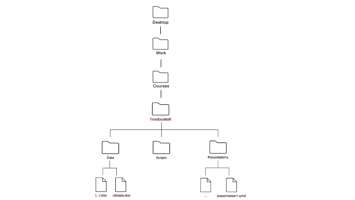

climate <- read_excel("Desktop/Work/Courses/FromExceltoR/Data/climate.xlsx")Exercise 2: Tidyverse
Setting up
Create new Quarto document. For working on the exercise, create a new Quarto document with a descriptive name and save it in the Scripts folder. You can use the commands shown in presentation2.qmd to solve this exercise. There is no shame in outright copying from the presentation2.qmd script, provided you understand what the command is doing.
Load packages. You will need to load the packages
tidyverseandreadxlfor this exercise.
Importing data and a first look at the dataset
The data set used in these exercises was compiled from data downloaded from the website of the UK’s national weather service, the Met Office. It is saved in the file climate.xlsx1 which can be found in the folder Data/. The spreadsheet contains monthly data from five UK weather stations for the following variables:
| Variable name | Explanation |
|---|---|
| station | Location of weather station |
| year | Year |
| month | Month |
| af | Days of air frost |
| rain | Rainfall in mm |
| sun | Sunshine duration in hours |
| device | Brand of sunshine recorder / sensor |
- Load data. Start by importing the dataset with the
Import Datasetbutton and name itclimate. When you do this, a command starting withread_excel()is shown in the console. It is a good idea to copy the command into your script so that the next time you run your script you can just execute that line instead of having to find the file again.
NoteWhat is the character in the
read_excel() function?
The character inside the read_excel() is a path to the excel file you have imported. A path is just a set of directions that tells R how to get from one folder (directory) to another. Since your script is saved inside the Scripts directory, you need to tell R how to move up one level to get out of Scripts, and then into the Data folder where your file lives. We write paths as character strings — that means they go inside quotation marks.
The path could look like the one below, where the directions are separated by slashs /. This means that we start in the Desktop folder, then go to the Work, to the Courses folder, to the FromExceltoR folder, to the Data folder where we select the climate.xlsx file.
Have a look at the path inside the read_excel() that was printed in the console when you imported the excel file. Does this path make sense when you think about the files and sub files on your computer?

First look at data. Write the name of the dataframe, i.e.
climate, into the console and press enter to see the first rows of the dataset. You can also click on theclimateobject in the Environment panel.Explore your dataset and understand what data you have.
How many observations, i.e. rows are there?
How many data columns are there and what are their types?
What is the information in each row and column?
How many different stations are there?
How many rows per station?
Working with the data
Before you proceed with the exercises in this document, make sure you load the tidyverse in order to use the functions from this package.
Count the number of rows that did not have any days with air frost.
Count the number of rows per station that did not have any days with air frost.
Filter/select from the climate dataset (remember to
filterrows andselectcolumns):all rows from the station in Oxford
all rows from the station in Oxford when there were at least 100 hours of sunlight
all rows from the stations in Oxford and Camborne when there were at least 100 hours of sunlight
a subset that only contains the
station,yearandraincolumns
The next few questions build on each other, each adding a piece of code:
Compute the average rainfall over the full dataset by using the
summarizefunction. You can look at the examples we did at the end of presentation 2.Now, compute the average rainfall, standard deviation of the rainfall and the total rainfall (the sum) on the full dataset. I.e. all three measures should be inside the same resulting table. Have a look at the tidyverse lecture if you have trouble with this.
Now, use
group_bybeforesummarizein order to compute group summary statistics (average, standard deviation, and sum) but split up into each of the five weather stations.Include a column in the summary statistics which shows how many observations, i.e. rows, the data set contains for each station.
Sort the rows in the output in descending order according to average annual rainfall.
Manipulating the data
Create a new column in
climateand save the new dataset in a different object so you don’t overwrite your originalclimatedata. The new column should count the number of days in each month without air frost, based on the existingafcolumn. For this exercise, assume each month has 30 days. To find the number of days without air frost, subtract the value in theafcolumn from 30.Add another column to your new dataset that says whether the weather this month was good. We consider a month to be good if it had at least 100 hours of sunshine and less than 100 mm of rain. Otherwise the weather was bad.
How many months are there with good weather (use the column you made in 14) for each station? Find the station that has the most months with good weather.
Complex operations
The final questions require that you combine commands and variables of the type above.
For each weather station apart from the one in Armagh, compute the total rainfall and sunshine duration for months that had no days of air frost. Present the totals in centimeters and days, respectively.
Identify the weather station for which the median number of monthly sunshine hours over the months April to September was largest.
Wrapping up
- Like in the last exercise; imagine you need to send your code to a collaborator. Review your code to ensure it is clear and well-structured, so your collaborator can easily understand and follow your work. Render your Quarto document and look at the result.
Optional section
If you’ve gone through the exercises above and are ready for more challenges — you’re in the right place. You haven’t learned all the operations you’ll need here, so feel free to search online for help. If you’re feeling overwhelmed, no worries — take a break and come back later.
Let’s simulate some climate data for the year 2056 and merge it with the original dataset from 2016.
climate_fake <- climate
climate_fake$year <- 2056
set.seed(101)
climate_fake$af <- sample(0:11, nrow(climate_fake), replace = TRUE)
climate_fake$rain <- rnorm(nrow(climate_fake), mean = mean(climate$rain)+150, sd = sd(climate$rain)+50)
climate_fake$sun <- rnorm(nrow(climate_fake), mean = mean(climate$sun), sd = sd(climate$sun))
climate_fake$device <- paste(climate_fake$device, ', New and Improved')
climate_change <- rbind(climate, climate_fake)
head(climate_change)Modify the station names so that they start with capital letters.
Create a new column that contains the month names (e.g., ‘January’, ‘February’, etc.). Could someone before you have needed the
month.namein R?Create a new column that assigns a season (Winter, Spring, Summer, Fall) based on the month.
TipHint
Have a look at the case_when function.
Summarize the mean rain fall, air frost, and sun for each year. Evaluate the results.
Summarize the mean rain fall, air frost, and sun for each season and year. Compare the seasons across the years. How will the seasons be different in year 2056?
Summarize the mean rain fall, air frost, and sun for each station, season and year. Is this a good way to get an overview of the weather changes?
We can get a better overview of the weather changes by plotting the data. We are learning the ggplot method in the next presentation.
- Export your data
If you’re up for more, we can explore some additional exercises that may not perfectly align with this dataset but will introduce you to some very useful tidyverse operations.
- Extract the unique stations and save them as a vector.
TipHint
The unlist function will convert a one-column dataframe to a vector.
Count how many times the letter ‘A’ appears in each station.
Count the number of both uppercase ‘A’ and lowercase ‘a’ in each station.
In the climate change data frame, create a new column for each word in the
devicecolumn. For example, you can use thestr_split_i()function to extract individual words and assign them to separate columns.Modify one of the new columns to contain only lowercase letters and the other to contain only uppercase letters.
Add a new columns that contains the first three letters of each month in uppercase.
TipHint
Have a look at the str_sub function.
Footnotes
Contains public sector information licensed under the Open Government Licence v3.0.↩︎